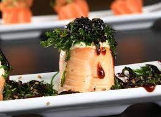
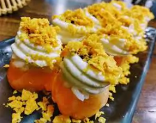

Entradas Frias
Carpaccio Salmão
Lâminas de salmão mergulhadas ao molho ponzú com gergelim moído e cebolinha. 16 Lâminas.

Carpaccio Salmão Maçaricado
Lâminas de salmão levemente maçaricadas com teriyaki e gergelim. 16 Lâminas.
Carpaccio Atum
Lâminas de atum mergulhadas ao molho ponzú com gergelim moído e cebolinha16 Unidades. 16 lâminas.
Carpaccio Peixe prego
Lâminas de peixe prego mergulhadas ao molho ponzú com gergelim moído e cebolinha. 16 Lâminas.
Carpaccio Peixe prego Maçaricado
Lâminas de peixe prego maçaricadas com teriyaki, gergelim e molho especial a base de alho. 16 Lâminas.
Ceviche Peixe branco
Peixe branco marinado no limão com cebolinha e cebola roxa.
Ceviche de salmão
Salmão marinado no limão com cebolinha e cebola roxa.

Canapé Salmão
Salmão batido com cream cheese, cebolinha, gergelim, molho teriyaki e massa de harumaki. 16 unidades.

Entradas quentes
Shimeji
Cogumelos pequenos comestíveis preparados com manteiga.

Shimeji com Lula
Cogumelos comestíveis com Lula cortada em fatias
Shimeji com Camarão
Cogumelos comestíveis preparados na manteiga com Camarão.
Harumaki de Legumes
O Harumaki é um enrolado frito, de massa muito crocante e com recheios variados. 8 Unidades. 8
unidades

Harumaki de Queijo
O Harumaki é um enrolado frito, de massa muito crocante e com recheio de Queijo. 8 unidades
Missoshiru
Sopa a base de pasta de soja com queijo tofú e cebolinha.

Gohan
Arroz branco japonês.

Guioza Frita

Guioza á vapor

Lula à dorê
Yakimeji
Arroz temperado, legumes, carne.

Shimeji
Cogumelos pequenos comestíveis preparados com manteiga.
Shimeji com Lula
Cogumelos comestíveis com Lula cortada em fatias
Shimeji com Camarão
Cogumelos comestíveis preparados na manteiga com Camarão.
Harumaki de Legumes
O Harumaki é um enrolado frito, de massa muito crocante e com recheios variados. 8 Unidades. 8 unidades
Harumaki de Queijo
O Harumaki é um enrolado frito, de massa muito crocante e com recheio de Queijo. 8 unidades
Missoshiru
Sopa a base de pasta de soja com queijo tofú e cebolinha.
Gohan
Arroz branco japonês.
Guioza Frita
Guioza á vapor
Lula à dorê
Yakimeji
Arroz temperado, legumes, carne.
Sashimis
Sashimi Peixe Branco
Fatias de peixe branco cru. 10 fatias
Sashimi Salmao
Fatias de salmão cru. 10 fatias
Sashimi de Atum
Fatias de atum cru. 10 fatias
Sashimi Especial
Fatias selecionadas de peixes cru: 5 sashimis salmão maçaricado com creamcheese e geleia picante, 5 sashimis peixe branco, 5 sashimis de atum, 5 sashimi polvo, 5 sashimi kani. 25 fatias. Obs: Qualquer sashimi pode ser maçaricado.
Uramaki
Uramaki Salmão
Uramaki de salmão. 8 unidades

Uramaki Filadélfia
Uramaki Filadélfia. 8 unidades
Uramaki Skinred
Uramaki de skinred. 8 unidades
Uramaki Atum
Uramaki de atum. 8 unidades. 8 unidades
Uramaki Salmão Nashy
Uramaki de salmão, tomate seco e rúcula. 8 unidades
Ebi Uramaki
Arroz, camarão pré-cozido, creamcheese e cebolinha. 8 unidades
Uramaki Skin
Uramaki de skin. 8 unidades
Uramaki Califórnia
Uramaki califórnia. 8 unidades
Uramaki Atum Nashy
Atum, abacate e cebolinha. 8 unidades
Ebiten Uramaki
Arroz, camarão empanado, creamcheese, cebolinha e molho tonkatsu picante. 8 unidades
Hossomaki
Shakemaki
8 Unidades
Shakemaki Tropical
8 Unidades

Tekkamaki
Kappamaki
8 Unidades
Kanimaki
Acelgamaki
8 Unidades
Sushi Jhou
Jhou Salmão cream cheese e cebolinha
Enrolado salmão com recheio na parte superior de creamcheese e cebolinha. 8 unidades
Jhou Salmão cream cheese e couve
Enrolado salmão com recheio na parte superior de creamcheese e couve. 8 unidades
Jhou Salmão cream cheese e geleia picante
Enrolado salmão maçaricado com recheio na parte superior de creamcheese e geleia picante. 8 unidades
Jhou Salmão cream cheese e doritos
Enrolado salmão com recheio na parte superior de creamcheese e doritos. 8 unidades
Jhou Salmão creamcheese e ovas massego
Enrolado salmão com recheio na parte superior de creamcheese e ovas massego. 8 unidades
Jhou Salmão
8 unidades.
Jhou Salmão creamcheese e Shimeji
Enrolado salmão com recheio na parte superior de creamcheese e shimeji. 8 unidades
Jhou Atum maçaricado e pimenta tabasco
Enrolado Atum maçaricado com recheio na parte superior de pimenta tabasco. 8 unidades
Jhou Peixe branco maçaricado teriyaki e gergelim moído
Enrolado peixe branco maçaricado com recheio na parte superior de molho teriyaki e gergelim moído. 8 unidades
Jhou furay teriyaki
Enrolado salmão teriyaki com recheio. 8 unidades
Jhou Ebiten Teriyaki Picante
8 unidades
Jhou Atum
Enrolado Atum com recheio na parte superior. 8 unidades
Jhou Acelga pimenta tabasco
Enrolado acelga e molho pimenta tabasco. 8 unidades
Jhou salmão cream cheese e batata doce frita
Jhou salmão cream cheese e geleia picante
Jhou salmão cream cheese e alho poró refogado
Jhou camarão
Hot Roll
Hot Roll Salmão
Hossomaki empanado frito com recheio salmão.

Hot Roll Salmão creamcheese cebolinha
Hossomaki empanado frito com recheio salmão e coberto com creamcheese e cebolinha.
Hot Roll Salmão creamcheese couve
Hossomaki empanado frito com recheio salmão, coberto com creamcheese e couve.
Hot Roll Salmão creamcheese e alho poró frito
Hossomaki empanado frito com recheio de salmão coberto com creamcheese e alho poró.
Hot Roll Salmão Ebi
Hossomaki empanado frito com recheio salmão com camarão.
Hot Roll Salmão Kani molho teriyaki picante
Hossomaki empanado frito com recheio de salmão frito com kani coberto com molho teriyaki picante.
Hot Roll Shimeji
Hossomaki empanado frito com recheio de shimeji.
Hot Roll Salmão creamcheese e shimeji
Hossomaki empanado frito com recheio salmão e shimeji com cobertura creamcheese.
Hot Ebi Holl
Hot Roll salmão cream cheese e batata doce frita
Hot Roll salmão cream cheese e doritos
Hot Roll salmão cream cheese e geleia picante
Robata
Robata salmão com shimeji
Robata salmão com polvo
Robata salmão e couve
Robata camarão
Niguiris
Niguiris Salmão
Fatia de salmão sobre gohan. 8 unidades
Niguiris Salmão Nashy
Fatia de salmão levemente maçaricado, com raspas de limão siciliano sobre gohan. 8 unidades
Niguiris Atum
Fatia de atum cru sobre arroz goham. 8 unidades
Niguiris Peixe branco
Fatia de peixe branco cru sobre gohan. 8 unidades
Niguiri Skin
Fatia de pele de salmão sobre gohan.
Niguiris Skin com limão
Fatia de pele de salmão sobre gohan com limão. 8 unidades
Niguiris Kani
Fatia de kani sobre gohan. 8 unidades
Niguiris Camarão
Camarão sobre gohan. 8 unidades
Niguiris Polvo
Fatia de polvo sobre gohan. 8 unidades